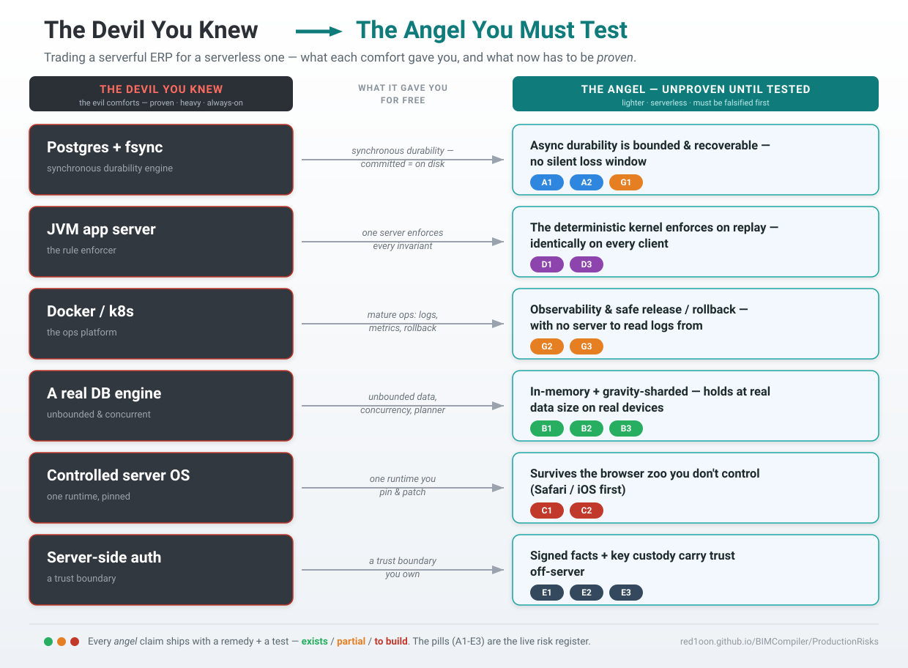

Production Readiness — Risk Register & Test Plan¶
"The Angel Must Be Tested First." We left the devil we knew — a Postgres container, a JVM app server, Docker's operational maturity, fsync durability, a server that enforces every rule. Those were evil comforts: heavy, costly, always-on — but battle-proven, and their failure modes are a generation old and well-charted. This architecture trades them for something lighter and, on paper, better: no server of record, compute on the client, durability in a signed log (DistributedERP §0). That trade is only real once each comfort we removed has a replacement we have tested to failure. This document is that test list. It is a pre-mortem, not a brochure.
How this document is disciplined¶
Per the project's prime rule (deterministic, non-invent, extract) and its testing law (every test names the issue it proves or disproves), every risk below carries a test plan, and every test is tagged with its honest status:
- ✅ EXISTS — a named witness already proves/disproves it (cite the
poc_*.js/W-*/§-log). - 🟡 PARTIAL — a witness covers part of it; the production-grade case is not yet exercised.
- 🔴 TO BUILD — this is a gap. No test exists. Until it does, the risk is unverified and the feature is not production-ready on that axis.
The 🔴 rows are the real output of this document. A green register is the goal; today's reds are the work-to-zero before a paying tenant. We do not ship an axis whose test is 🔴.
What we gave up, and what now must replace it¶

| The devil we knew (old stack) | What it gave us for free | The angel must now prove (this doc) |
|---|---|---|
| Postgres + fsync | synchronous durability — a committed row is on disk before COMMIT returns |
async durability is bounded and recoverable — no silent loss window (A1, A2, G1) |
| JVM app server | one place that enforces every invariant, server-side | the deterministic kernel enforces on replay, on every client, identically (D1, D3) |
| Docker / k8s | mature ops: logs, metrics, health checks, rollback | observability + release/rollback without a server to read logs from (G2, G3) |
| A real DB engine | unbounded dataset, concurrency, query planner | the in-memory + sharded model holds at real data size on real devices (B1, B2, B3) |
| A controlled server OS | one runtime you pin and patch | survival across the browser zoo you do not control (C1, C2) |
| Server-side auth + access control | a trust boundary you own | signed facts + key custody carry trust off-server (E1, E2, E3) |
The thesis is that each replacement is better (cheaper, offline-capable, more auditable). The job here is to falsify that thesis on every axis before a customer does.
Severity & status legend¶
- S1 — Integrity / data loss (silent wrong number, or lost committed work). The unforgivable class.
- S2 — Availability (can't work, can't recover).
- S3 — Performance / UX (too slow, too heavy, degrades on real devices).
- S4 — Security / compliance (forgery, key loss, GDPR).
Likelihood: H/M/L. Mitigation: in place / partial / design-only.
Master register (read this, then drill)¶
| ID | Risk | Class | Sev | Likelihood | Mitigation | Test status |
|---|---|---|---|---|---|---|
| A1 | Eviction × async-durability loss window | Durability | S1 | H (Safari) | in place | 🟡 PARTIAL |
| A2 | Lost sequencer / relay (rebuild books) | Durability | S1 | M | in place | ✅ EXISTS |
| A3 | Lost signing key (the floor) | Durability | S1/S4 | M | partial | 🟡 PARTIAL |
| B1 | In-memory RAM ceiling | Capacity | S2/S3 | H at scale | partial | 🔴 TO BUILD |
| B2 | First-load cold start (WASM + DB hydrate) | Capacity | S3 | M | partial | 🔴 TO BUILD |
| B3 | IndexedDB ~1GB cap / OPFS gated by COOP-COEP | Capacity | S2 | M | in place (detect) | 🟡 PARTIAL |
| C1 | Safari/iOS heterogeneity & eviction | Environment | S1/S2 | H | partial | 🔴 TO BUILD |
| C2 | Browser/library API drift | Environment | S2 | M | partial | 🟡 PARTIAL |
| D1 | Nondeterminism creep → replay divergence | Correctness | S1 | M | in place | ✅ EXISTS |
| D2 | Schema migration to N offline clients | Correctness | S1 | H (on 1st breaking change) | design-only | 🔴 TO BUILD |
| D3 | CAS sliver / cross-branch arbitration | Correctness | S1 | L | in place | ✅ EXISTS |
| D4 | Relay equivocation | Correctness | S1 | L | in place | ✅ EXISTS |
| E1 | Key custody / rotation / revoke / recovery | Security | S4 | M | partial | 🟡 PARTIAL |
| E2 | Right-to-erasure on an immutable log | Compliance | S4 | M | in place | ✅ EXISTS |
| E3 | Bearer-token forwarding (credit) | Security | S4 | M | in place | 🟡 PARTIAL |
| F1 | web-ifc import fidelity | Integration | S3 | M | partial | 🟡 PARTIAL |
| G1 | Relay operation: idempotency / retry / DR | Operations | S2 | M | in place | ✅ EXISTS |
| G2 | Observability without a server to read | Operations | S2 | H | design-only | 🔴 TO BUILD |
| G3 | Release / rollback (sw.js cache, versioning) |
Operations | S2 | M | partial | 🟡 PARTIAL |
Headline: the 🔴 set — B1, B2, C1, D2, G2 — is the production gate. Three are capacity/environment (does it survive a real phone and a real Safari?), one is the category-wide hard problem (schema migration offline), and one is can you even see production? These five are the pre-launch backlog.
A. Durability & data loss — replacing fsync¶
A1 — Eviction × async-durability loss window · S1 · 🟡 PARTIAL¶
- Old paradigm gave you:
COMMITreturns only after the row is on disk. Loss requires disk failure. - Now you must prove: a committed op survives the gap between local append and the moment its signed log reaches a second location — even if the browser evicts the origin's storage (Safari ITP ~7 days; low-disk eviction; user clears data) inside that gap.
- Failure scenario: a foreman records 40 snags offline on an iPhone; closes the PWA; iOS evicts storage on day 8 before the device ever reached Wi-Fi. The ops are gone, and nothing told anyone.
- Severity / likelihood: S1 / H on Safari-iOS, M elsewhere. This is the single most dangerous row.
- Mitigation in place: self-securing log + email/social durability (§5.2b);
navigator.storage.persist()requested on first load; clipboard/relay export (poc_oplog_clipboard.js); per-node email-DR (§14). - Remedy steps:
- Make durability visible, not implicit. A per-record state badge:
local → syncing → durable@N(durable only after the op reaches ≥1 replica/the user's channel). The user must be able to see unsynced work. - Block-on-critical: for high-value ops (a posted invoice, a certified claim), refuse to mark "done" until at least one durable replica acks — the offline-card-decline pattern (
§5(3)). - Aggressive opportunistic flush: on every
visibilitychange/onlineevent, push the un-acked tail to the relay and emit the signed-email snapshot (§14checkpoint+deltas). - Eviction early-warning: check
navigator.storage.estimate()+persisted()on load; ifpersisted=falseor quota is tight, surface a "back up now" prompt and auto-emit a snapshot. - Recovery drill in-product: a one-tap "restore from my inbox" that reads the latest signed snapshot and replays (
§9.A). - Test plan:
| Test | Proves / disproves | Status |
|---|---|---|
export → wipe → import → replay-hash == pre-export hash |
a wiped device recovers to byte-identical state | ✅ EXISTS (poc_persist.js) |
| inbox snapshot → new PWA → count restored | lost-phone recovery from the user's own channel | ✅ EXISTS (poc_email_dr, W-POS-WAN-SCALE B6) |
| real-Safari-iOS eviction soak: append N ops offline → force ITP eviction (7-day clock or devtools) → assert auto-snapshot fired before eviction, and recovery replays N ops | the window itself is closed on the device we don't control | 🔴 TO BUILD |
durability-badge invariant: an op shown durable@N is provably on ≥1 replica; one shown local is never counted as safe |
the UI never lies about safety | 🔴 TO BUILD |
| block-on-critical: high-value op cannot reach "done" offline | no silent high-value loss | 🔴 TO BUILD |
- Leading indicators: % sessions that emit a durable snapshot before close; median time-to-first-durable; count of devices with persisted=false; age of oldest un-acked op in the field. |
||
| - Residual after mitigation: email-account loss is a risk the user already carries; we inherit it, never manufacture a new one. But the soak test must be green before this is anything but a hope. |
A2 — Lost sequencer / relay · S1 · ✅ EXISTS¶
- Old paradigm gave you: the DB is the book; lose it and you restore a backup.
- Now you must prove: the net books are reproducible from the union of signed edge logs even if the central relay is destroyed — because disjoint per-branch folds commute.
- Mitigation in place + test: 50-branch blackout rebuilt from the edges →
maxDiff=0c, identical tip (poc_blackout_resume.js §ORDER-HONEST). ✅ - Remedy steps: (1) keep relay state itself snapshot+replicated (it's an optimization, the logs are the truth); (2) document the rebuild runbook (collect edges → verify sigs → total-order → replay) as an operational procedure, not just a witness.
- Residual: the cross-branch CAS arbitration order is the one thing not reconstructible from logs alone → see D3.
- Test plan addition: 🟡 add a scheduled "rebuild-from-edges" drill (quarterly) that runs the witness against a snapshot of real field logs, not a fixture — 🔴 TO BUILD (the witness exists; the recurring drill on real data does not).
A3 — Lost signing key (the floor) · S1/S4 · 🟡 PARTIAL¶
- Now you must prove: key loss degrades to recoverable, not catastrophic — facts are recoverable given the key; the key itself has a recovery path for consumer nodes.
- Mitigation in place: the key is the single anchor; secure-enclave custody; rotation/revoke witnessed (
poc_rotate.js). Consumer recovery anchors enumerated inpoc_email_dr(k-of-n across one's own channels, platform passkey, employer escrow,§14). - Remedy steps: (1) ship at least one concrete consumer recovery path end-to-end (passkey-bound key is the strongest default); (2) make "you are responsible for the key, not the data" an explicit onboarding step; (3) for org nodes, escrow with split custody.
- Test plan:
| Test | Proves / disproves | Status |
|---|---|---|
| rotate → past valid under old key, post-rotation old-key op rejected, revoked key loses future not past | key lifecycle is real, not hand-waved | ✅ EXISTS (poc_rotate.js) |
| k-of-n key recovery end-to-end on a wiped consumer device | a real human can get their key back | 🔴 TO BUILD |
| - Residual: key theft is irreducible — true for every system (you can steal a server's key too). We don't claim to solve it; we witness and consequence it. |
B. Capacity & performance — replacing the DB engine¶
B1 — In-memory RAM ceiling · S2/S3 · 🔴 TO BUILD (the top capacity gap)¶
- Old paradigm gave you: Postgres streams from disk; dataset size is bounded by disk, not RAM.
- Now you must prove: sql.js is in-memory, so RAM bounds the working set. The headline buildings (122K elements) and the AD engine must fit and stay smooth on a mid-tier phone, not just a dev laptop. ETT names this as the real scaling axis (Memory64 is still FUTURE/pending).
- Failure scenario: a customer's 300K-element hospital opens fine on the demo MacBook and crashes the tab on the site foreman's Android.
- Mitigation in place / design: geometry DLOD + split-DB streaming (S285 city); the gravity-sharding spec for the engine (
§13) — spec only, no code yet. So the ceiling is designed for but not enforced. - Remedy steps:
- Establish a hard memory budget per target device class (e.g. ≤ X MB heap on a 4 GB Android) and treat exceeding it as a build failure, not a surprise.
- Bring §13 gravity-sharding forward from spec to code before a tenant's dataset forces it — stream the engine by op-log mass; fetch cold tables on touch.
- Geometry: enforce DLOD/streaming budgets — never hydrate the full model when the camera only needs a floor.
- Backpressure & graceful degradation: when near budget, drop LOD / evict cold shards rather than crash; surface "large model — streaming" instead of freezing.
- Set documented dataset limits (elements, AD tables) per device tier and test at the limit, with a clear message past it — no silent truncation.
- Test plan:
| Test | Proves / disproves | Status |
|---|---|---|
| device-tier memory soak: open the largest real building + full AD on a real mid-tier Android/iPhone; measure peak heap vs budget over a 30-min session | the ceiling holds on the device we ship to | 🔴 TO BUILD |
| gravity-shard witness: tier-0 content-hash matches prefetch; cold-touch pulls exactly that table; over-fetch = 0; resident replay-hash == full-engine replay-hash on walked paths | the engine streams without over-fetch or invention (§13) |
🔴 TO BUILD (spec exists, code does not) |
| DLOD budget test: camera on one floor never hydrates the whole model | geometry stays within budget | 🟡 PARTIAL (streaming exists; budget assertion does not) |
| - Leading indicators: peak heap by device class; tab-crash / OOM telemetry; DB/asset bytes shipped per session. | ||
| - Residual: WASM Memory64 (Safari pending) would lift the ceiling; we do not depend on it. Until then, sharding + budgets are the answer, and they must be tested at limit. |
B2 — First-load cold start (WASM + DB hydrate) · S3 · 🔴 TO BUILD¶
- This is your "cold start" — not a Lambda spin-up, but the download of sql.js WASM + the DB file(s) + in-memory hydrate on first paint. It grows with dataset size and is worst on a cold cache / slow mobile network.
- Remedy steps: (1) precache WASM + core via the service worker (already done for the shell — verify for DB shards); (2) ship the gravity tier-0
initbubble-style prefetch (<300mstarget,§13) and stream the rest on approach; (3) split DBs so first paint needs only the near set; (4) show real progress, never a blank freeze. - Test plan:
| Test | Proves / disproves | Status |
|---|---|---|
| first-load budget on throttled mobile (cold cache, Fast-3G/mid CPU): time-to-interactive vs a stated budget for S/M/L datasets | first paint is acceptable on a real network | 🔴 TO BUILD |
| SW precache hit on 2nd load → offline cold start works | the PWA truly starts offline | 🟡 PARTIAL (shell precached; per-dataset path unverified) |
| - Leading indicators: TTI p50/p95 by dataset size + network class; precache hit-rate. |
B3 — IndexedDB ~1GB cap / OPFS gated by COOP-COEP · S2 · 🟡 PARTIAL¶
- Now you must prove: on GitHub Pages (no COOP/COEP →
crossOriginIsolated=false→ no OPFS), persistence falls to the IndexedDB VFS with its ~1GB blob cap, and we detect and degrade, never silently fail.vfs_detect.jsalready does the detection (witnessed: GH Pages → IDB). - Remedy steps: (1) keep
vfs_detect'smisconfigfalsifier (never silently pick IDB where OPFS was available); (2) define behavior when a dataset would exceed the IDB cap — fail loud with a path forward (host with COOP/COEP for OPFS, or stay in-memory + rely on the log), never a half-written DB; (3) if a tenant needs OPFS speed, document the COOP/COEP hosting requirement as a deployment option (not GH Pages). - Test plan:
| Test | Proves / disproves | Status |
|---|---|---|
vfs_detect chooses opfs only when isolated; flags misconfig when it could have |
no silent downgrade | ✅ EXISTS (poc_vfs_detect) |
| over-cap behavior: a dataset exceeding the IDB cap fails loud with guidance, no corruption | the cap is a guard rail, not a cliff | 🔴 TO BUILD |
| - Residual: OPFS persistence concurrency is the field's still-maturing column — we are ROUTED-AROUND it (ETT), so its immaturity doesn't touch us; the cap does, and must be guarded. |
C. Environment heterogeneity — replacing the controlled server OS¶
C1 — Safari/iOS heterogeneity & eviction · S1/S2 · 🔴 TO BUILD¶
- Old paradigm gave you: one runtime you pin, patch, and reproduce. Production == staging.
- Now you must prove: survival across browsers you do not control — and Safari/iOS is the hostile case: storage eviction (ITP), quota caps, WASM and IndexedDB quirks, mobile memory pressure, the meta/viewport split. This is your real version of the article's "you can't see the servers" — the environment is opaque and not yours.
- Failure scenario: everything green in headless Chromium and on the dev's iPhone; a customer's older iPad on iOS Safari evicts mid-session, or the WASM heap behaves differently, and only that user sees it.
- Mitigation in place:
vfs_detectdegradation; mobile meta handling; the architecture assumes an untrusted, evictable client. - Remedy steps:
- Real-device matrix in CI/smoke — not just headless Chromium. At minimum: current + one-back iOS Safari, Chrome Android (mid-tier), desktop Safari/Firefox/Chrome. (BrowserStack/Sauce or a physical device lab.)
- Treat A1 eviction soak (above) as Safari-first — Safari is where the durability window actually bites.
- Capability probes, not UA sniffing — feature-detect OPFS, BroadcastChannel, Web Share, persist; degrade per capability (the
vfs_detectpattern, generalized). - A "what my browser supports" diagnostic page users/support can open to report environment, so a field bug is reproducible.
- Test plan:
| Test | Proves / disproves | Status |
|---|---|---|
| cross-browser smoke matrix (scripts load, DB returns data, buttons exist, share works) on iOS Safari + Android Chrome + desktop trio | the app runs on the zoo, not just Chromium | 🔴 TO BUILD |
| Safari eviction soak (= A1 row) | the durability window closes on Safari | 🔴 TO BUILD |
| capability-probe degradation (force each API off) → graceful fallback path taken | no hard dependency on an optional API | 🟡 PARTIAL (vfs_detect proves the pattern for OPFS/IDB; others unproven) |
| - Leading indicators: error/crash rate segmented by browser+OS+device tier; eviction events on Safari; capability-mix distribution from the field. | ||
| - Residual: you can mitigate but never eliminate browser heterogeneity — so the smoke matrix is permanent CI, re-run every release, because the vendors move under you (→ C2). |
C2 — Browser / library API drift · S2 · 🟡 PARTIAL¶
- Now you must prove: when a browser changes OPFS/eviction/BroadcastChannel/Web Share semantics, or three.js bumps a major (r166 → r184 changed culling; ROADMAP once carried a year-typo), you catch it before a user does.
- Mitigation in place: ETT tracks the dependency dates + effect tags; viewer pins three.js versions; CI smoke (
system_is_real.sh,ci.yml). - Remedy steps: (1) pin and changelog-review every renderer/sql.js/web-ifc bump; (2) keep a "canary" build on the next browser channel (Chrome Beta, Safari Technology Preview) in the smoke matrix; (3) wrap each browser capability behind a thin adapter so a drift is a one-file fix, not a scatter.
- Test plan:
| Test | Proves / disproves | Status |
|---|---|---|
| CI smoke on each release (scripts load, real building renders, clash returns) | a dependency bump didn't break the core | 🟡 PARTIAL (ci.yml headless subset exists; renderer-version regression suite does not) |
| renderer-upgrade regression: pinned-vs-new three.js renders identical frame/clash on a fixture | a three.js bump is safe before adopting | 🔴 TO BUILD |
| - Residual: the routed-around OPFS-concurrency column (ETT) keeps maturing; that's a bonus, not a risk — but watch that we don't accidentally take a dependency on it. |
D. Correctness & determinism — replacing server-side enforcement¶
D1 — Nondeterminism creep → replay divergence · S1 · ✅ EXISTS (guard it forever)¶
- Old paradigm gave you: one server computed the answer; clients just displayed it.
- Now you must prove: every client replays the ordered log to the identical state. A single nondeterministic verb —
Date.now(),Math.random(), a live FX/rate read — breaks merge and silently diverges two devices' books. This is infrastructure, not style (§7). - Mitigation in place + test: values are generated at the edge and recorded as op inputs; the kernel only reads them; UUIDv7 for identity. Witness:
replay-hash == live-hash(erp_kernel.js/poc_kernel.js/poc_longtail.js). ✅ - Remedy steps:
- Make the witness a CI gate on every kernel/verb change — a red
replay-hashblocks merge. (Today it's a local discipline per CLAUDE.md; promote it to enforced.) - Lint for forbidden calls in verb code (
Date.now,Math.random,fetchof live values, arglessnew Date) — fail the build, mirroring the workflow-script ban. - Determinism fuzz: replay a real op-log on two fresh kernels in shuffled-but-legal order → assert identical tip.
- Test plan:
| Test | Proves / disproves | Status |
|---|---|---|
replay-hash == live-hash on real SampleHouse / long-tail |
the kernel is deterministic today | ✅ EXISTS |
| CI gate wiring of the above on every verb change | a future nondeterministic verb is caught, not shipped | 🔴 TO BUILD (the test exists; the gate does not) |
| static lint for forbidden nondeterministic calls in verbs | invention can't creep in by hand | 🔴 TO BUILD |
| - Leading indicators: any field report of two devices disagreeing on a number = a P0 determinism breach; replay-hash CI pass-rate. |
D2 — Schema migration to N offline clients · S1 · 🔴 TO BUILD (the category-wide hard one)¶
- Now you must prove: the honest open problem (
§9.E, shared across the whole local-first category): when the AD/schema changes, N offline clients holding old ops must replay them to their original effect and adopt the new schema without diverging — with no server to coordinate a migration. - Failure scenario: you ship a breaking AD change; a van that's been offline two weeks syncs old-format ops that the new kernel replays differently → its books diverge. Postgres gave you one atomic migration; you have N devices on their own clocks.
- Mitigation in place: design-only — compiled-AD manifest + forward-only / frozen-effects replay (old ops replay to frozen effect). No witness yet.
- Remedy steps:
- Freeze-effects replay: every op records the AD-manifest version it was authored under; replay applies the frozen semantics of that version, never the latest. The migration is additive, never a reinterpretation of history.
- Manifest versioning + compatibility matrix: a client refuses to apply ops from a manifest it can't frozen-replay, and asks to update — loud, not silent.
- Migration as an op: the schema change is itself a signed, ordered op in the log, so every client adopts it deterministically at the same logical point.
- Forward-only discipline: never modify a shipped verb's effect; add a new verb + version bump (mirrors the
migration/*.sqlappend-only sacred rule). - Test plan:
| Test | Proves / disproves | Status |
|---|---|---|
| old-manifest ops replay to original effect under a new kernel | history is frozen, not reinterpreted | 🔴 TO BUILD |
| two clients on manifest v1 and v2 converge after a migration op | offline migration doesn't diverge | 🔴 TO BUILD |
| a client refuses (loud) an op from an unsupported manifest | no silent misapply | 🔴 TO BUILD |
- Leading indicators: distribution of manifest versions in the field; count of refused-op events; any post-migration replay-hash mismatch. |
||
| - Residual: stated plainly — this is a partial mitigation of a problem the category has not fully solved. Until the three tests are green, do not ship a breaking schema change to offline clients. This is the most important honesty in the document. |
D3 — CAS sliver / cross-branch arbitration · S1 · ✅ EXISTS¶
- Now you must prove: the one op-class that needs real-time arbitration (a single indivisible claim across sites) loses gracefully when the live arbiter is lost — the loser becomes a deterministic, explainable correction (a receivable/backorder), never a silent overwrite.
- Mitigation in place + test: total order at the broker is the serialization point; the un-reconstructible sliver is bounded and routed to the ledger; quorum-CAS keeps the live decision within a measured window. Witness:
poc_quorum_cas.js §INTERSECTION-NO-SPLIT / §WINDOW-NUMBER;poc_blackout_resume.js §CAS-SLIVER. ✅ - Remedy steps: (1) operate the quorum only for genuinely high-value global ops (don't pay the cost broadly); (2) make the ledger correction path (loser → receivable) a tested, visible accounting flow, not a footnote.
- Test plan: the witnesses exist (✅). 🟡 add a fault-injection drill: kill the broker mid-arbitration under quorum and assert no split-decision — 🔴 TO BUILD as a recurring chaos test (the unit witness exists; the chaos drill does not).
D4 — Relay equivocation · S1 · ✅ EXISTS¶
- Now you must prove: a dishonest relay handing different clients different orderings is detected and attributed, not silently divergent.
- Mitigation in place + test: clients sign their observed period-tip and gossip it; mismatched signed tips are attributable to the relay; an honest relay yields identical tips (no false positive). Witness:
poc_equivocation.js §DETECT/§ATTRIBUTABLE. ✅ - Remedy steps: (1) ship tip-gossip in the real client (the witness proves the mechanism; verify it's wired in production); (2) alert on any detected divergence.
- Test plan: ✅ mechanism proven; 🟡 wire-in + alerting in the shipping client is 🔴 TO BUILD.
E. Security & compliance — replacing the server trust boundary¶
E1 — Key custody / rotation / revoke / recovery · S4 · 🟡 PARTIAL¶
- Now you must prove: trust rides a signing key off-server. Custody, rotation, revoke, and consumer recovery all work — because there's no server account to "reset password" against.
- Mitigation in place + test: secure-enclave custody;
poc_rotate.jsproves rotate/revoke/history-valid/future-gated. Consumer recovery anchors enumerated (§14). (Overlaps A3.) - Remedy steps: (1) ship a passkey-bound key as the default consumer custody (hardware-backed, recoverable via platform sync); (2) org nodes: split/escrow custody; (3) rotation runbook (planned + emergency/compromise); (4) make "secure your key" an onboarding gate, not a setting.
- Test plan:
| Test | Proves / disproves | Status |
|---|---|---|
| rotate/revoke lifecycle | history verifies under the key valid at its seq | ✅ EXISTS (poc_rotate.js) |
| forged body under issuer key → rejected | the container is untrusted by design | ✅ EXISTS (poc_sign.js) |
| passkey-bound key recovery on a wiped device | a real consumer recovers without a server | 🔴 TO BUILD |
| emergency revoke propagates and gates the compromised key's future | a stolen key can be killed forward | 🟡 PARTIAL (unit proven; field propagation untested) |
| - Residual: key theft is the irreducible floor (true of any system). We witness + consequence, never claim to prevent. |
E2 — Right-to-erasure on an immutable log (GDPR/CCPA) · S4 · ✅ EXISTS¶
- Now you must prove: you can honour erasure on an append-only signed log without faux-deletion or breaking the chain.
- Mitigation in place + test: PII in a per-subject encrypted envelope; erase = destroy the subject key (crypto-shred); non-PII (account/cents) stays clear and folds. Witness:
poc_erase.js §ERASE/§BOOKS-INTACT— drop the key → PII irrecoverable, chain still verifies, tip identical, books byte-identical (maxDiff=0c). ✅ - Remedy steps: (1) a tested erasure request workflow (intake → locate subject key across replicas → shred → certificate of erasure); (2) document the honest posture: tombstone the identity, keep the accounting fact; (3) define key-shred propagation to replicas/relay.
- Test plan: ✅ mechanism proven. 🟡 the operational erasure-request workflow + multi-replica shred propagation is 🔴 TO BUILD.
- Residual: cleartext PII can only be "erased" by rewriting the chain — so the discipline is PII rides only in the envelope, never in the clear. Lint for it.
E3 — Bearer-token forwarding (credit) · S4 · 🟡 PARTIAL¶
- Now you must prove: a personal-credit URL can't be forwarded to give away the credit line, while promos stay deliberately forwardable.
- Mitigation in place: bind-on-first-open for personal credit (sign to device/public key, or one activation touch); bearer is fine for promo/view (
§5). - Remedy steps: (1) enforce device-bind on first open for any value-bearing token; (2) single-use semantics + identity binding for one-per-customer offers; (3) classify every token issuance as bearer vs bound at mint time.
- Test plan:
| Test | Proves / disproves | Status |
|---|---|---|
| forwarded personal-credit token fails device-bind | credit can't be given away by forwarding | 🟡 PARTIAL (design clear; end-to-end witness 🔴 TO BUILD) |
| double-claim of single-use offer is caught + attributable at reconcile | bearer fraud is witnessed, not silent (§5.1) |
🟡 PARTIAL |
F. Integration fidelity¶
F1 — web-ifc import fidelity · S3 · 🟡 PARTIAL¶
- Now you must prove: in-browser IFC import is correct enough, or that pre-extraction (the compiler/Bonsai path) is the supported route and import is best-effort.
import_worker.jsalready documents real quirks: web-ifc 0.0.77 returns white for IFC4 RevitIFCINDEXEDCOLOURMAP; unit-scaling needs heuristics. - Remedy steps: (1) a golden-IFC regression corpus (IFC2x3 + IFC4 + Revit-export) with expected element counts/colors/units; (2) pin web-ifc and changelog-review bumps; (3) make pre-extraction the recommended path for production datasets, import the onboarding convenience; (4) surface import warnings (not silent white/mis-scaled geometry).
- Test plan:
| Test | Proves / disproves | Status |
|---|---|---|
| golden-IFC corpus → expected counts/units/colors | import fidelity is bounded and regression-guarded | 🔴 TO BUILD |
| round-trip IFC → browser → same schema → viewer | the pipeline closes | 🟡 PARTIAL (S220 closed the round-trip; no fidelity corpus) |
G. Operations — replacing Docker's maturity¶
G1 — Relay operation: idempotency / retry / DR · S2 · ✅ EXISTS¶
- Now you must prove: when the dumb relay is needed (multi-branch, durability), it ingests idempotently, survives crash/restart, and recovers — without becoming a server of record.
- Mitigation in place + test:
erp_relay_server.js+test_kernel_relay.js(idempotent ingest, convergence over HTTP, durable restart); fleet-scaleW-POS-WAN-SCALE(10k tills, relay-crash + email-backup DR, idempotent retry, partitioned doc-numbering). ✅ - Remedy steps: (1) run the relay intermittently, not 24/7 (it's not always-on by design); (2) a documented DR runbook (relay loss → rebuild from edges, A2); (3) idempotency keys on every ingest; (4) capacity-test at expected fleet size.
- Test plan: ✅ exists. 🟡 add a production-scale load test at the tenant's real fleet size — 🔴 TO BUILD per onboarding.
G2 — Observability without a server to read · S2 · 🔴 TO BUILD (the operational blind spot)¶
- Old paradigm gave you: server logs, APM, dashboards — one place to see production.
- Now you must prove: with compute on N clients and no server of record, you can still see production — errors, performance, durability lag, capability mix — without a telemetry pipe that violates the offline/privacy stance.
- Failure scenario: A1 (a data-loss window) or C1 (a Safari-only crash) happens in the field and you never find out, because there's no server log and no error stream.
- Mitigation in place: the signed op-log is a perfect audit trail per node — but it's on the node, not aggregated; you can't see fleet health from it without collection.
- Remedy steps:
- Opt-in, signed, privacy-preserving telemetry: ship anonymized health beacons (error class, device tier, heap peak, durability lag, capability mix) — never PII, signed like everything else, user-consented.
- Client-side error capture (window.onerror / unhandledrejection) → batched to a sink, with offline buffering.
- A self-diagnostic the user/support can run (C1) so a field bug is reproducible without server logs.
- Field invariants as alerts: two-devices-disagree (D1), refused-op spikes (D2), oldest-un-acked-op age (A1), eviction events (C1).
- Test plan:
| Test | Proves / disproves | Status |
|---|---|---|
| error in a client surfaces in the health sink within N (offline-buffered) | you can see production failures | 🔴 TO BUILD |
| beacon carries zero PII (schema-checked) | observability doesn't break the privacy stance | 🔴 TO BUILD |
| the four field-invariant alerts fire on injected faults | the dangerous rows (A1/C1/D1/D2) are visible | 🔴 TO BUILD |
| - Leading indicators: beacon coverage (% sessions reporting); mean-time-to-detect a field fault. | ||
| - Residual: this is the operational price of no server. It's solvable, but it is design-only today — and shipping without it means flying blind on exactly the S1 rows. |
G3 — Release / rollback (sw.js cache, versioning) · S2 · 🟡 PARTIAL¶
- Now you must prove: a PWA with a service-worker cache can be updated and rolled back safely — a bad deploy can't strand users on a broken cached version, and
CACHE_VERSION/precache bumps don't wipe the wrong assets. - Mitigation in place: the no-shrink docs seatbelt (
safe_gh_deploy.sh, W-DEPLOY-GUARD); CI smoke (system_is_real.sh); the CLAUDE.mdsw.jsconflict discipline (keep both precache additions, take higherCACHE_VERSION). - Remedy steps: (1) SW update flow that prompts-to-reload on new version, with a kill-switch to force-refresh a broken release; (2) staged rollout + a tested rollback (re-publish previous
CACHE_VERSION); (3) smoke-gate every deploy (already partly there); (4) version every DB/asset so a client never mixes incompatible shards. - Test plan:
| Test | Proves / disproves | Status |
|---|---|---|
| deploy guard aborts on delete/shrink | a thin/stale tree can't wipe live | ✅ EXISTS (W-DEPLOY-GUARD) |
| SW update → new version adopted; forced refresh recovers a broken release | a bad deploy is recoverable, not sticky | 🔴 TO BUILD |
rollback to previous CACHE_VERSION restores working app |
rollback actually works | 🔴 TO BUILD |
H. The New-Paradigm Monitor — observability you can feel¶
The classic iDempiere System Monitor in the login panel watched the server's vitals — JVM heap, DB connections, pool, uptime. In this paradigm there is no server, so the monitor's job flips: it watches the paradigm's vitals — the things that only exist because the evil comforts are gone. This is two wins at once:
- It is the concrete remedy for G2 — observability. The same widgets that let a user feel the new model are the field-health signals (durability lag, replay integrity, eviction, CAS retry) you need so you're not flying blind.
- It is a first-impression "wow" surface. It lives in the login panel — the first thing seen — with familiar iDempiere chrome (zero learning curve, per the GRAND_LANE law). A user pokes it and goes "ah — this is the new stuff, and I can touch it."
Most of the raw signals already exist — FoldEngineConstraints.md §6 specs the monitor (vfs_backend, quota_used_pct, offline_queue_mb, cas_retry_rate, fold_ms_p95, battery_pct, bootstrap_path) and vfs_detect.js / offline_queue.js / battery_aware.js already emit some. So this is mostly wiring existing signals into the panel as feel-it widgets.
The widget set (each maps to a risk + an existing signal)¶
| Widget | What you feel | Risk | Existing signal / witness |
|---|---|---|---|
| Prove-the-books | press Verify → the whole balance rebuilds from zero events; replay-hash == live-hash ✓ |
D1 | replay-hash (erp_kernel.js) |
| Tap-to-fold | tap any figure → the N signed ops that sum to it | root truth | kernel_ops query |
| Chain integrity | chain OK · len N · tip …; tamper → breaks at op N |
D4 | verifyChain() (poc_chain.js) |
| Durability ladder | every record local → syncing → durable@N; oldest un-acked age; quota; persisted() |
A1 · G2 | §6 quota_used_pct / offline_queue_mb |
| Pull-the-plug | toggle offline → keeps working, ops queue, reconcile on reconnect | availability | offline_queue.js |
| Bootstrap path | "started from checkpoint (fast) vs genesis (25 s)" | B2 | §6 bootstrap_path |
| Serverless meter | servers: 0 · round-trips: 0 · infra cost: $0 vs classic-iDempiere baseline |
§11.1 | round-trip counter / fold_ms_p95 |
| Disposable-host light | "your truth replays to the identical tip from any host" | §11.1 | replica test (test_kernel_replica.js) |
| Your-key panel | your signing key, rotation history, recovery method | E1 | poc_rotate.js |
| Business-time clock | "real-time: the 1 CAS class · everything else folds at close-of-day" | Truth 2 | fold cadence |
| Crypto-shred demo | shred a subject key → PII gone, chain still verifies, books intact | E2 | poc_erase.js |
A Classic ↔ Angelic toggle keeps the familiar panel and swaps the readouts.
Build-ready specs — the top 3 (witness-claim first, per CLAUDE.md)¶
Spec-first, each with the §-log line that is the proof. Start order = cheapest-highest-impact.
① W-MON-PROVE-BOOKS — "rebuild my books from zero, live." (cheapest — the witness already exists, it just needs a button)
- Surface: a Verify button in the login-panel monitor.
- Behavior: clone the current op-log into a fresh in-memory kernel, replay, hash the folded state, compare to the live hash.
- Acceptance §-log: §MON-REPLAY ops=N replayHash=… liveHash=… match=Y ms=…
- Proves: D1 determinism, interactively — the number is a fold, not a stored cell. (Falsifier: corrupt one op → match=N, flagged red.)
- Reuse: the existing replay-hash == live-hash path in erp_kernel.js / poc_kernel.js. Status: 🟡 → ship as the first touchable slice.
② W-MON-DURABILITY-LADDER — "show me what's safe." (the most important field-health widget)
- Surface: per-record badge local → syncing → durable@N, plus oldest un-acked op age, quota_used_pct, persisted().
- Acceptance §-log: §MON-DUR local=… syncing=… durable=… oldestUnackedSec=… quotaPct=… persisted=…
- Proves: A1 made visible — the UI never marks an unsynced op as safe. (Falsifier: append offline → all local; force-sync → transition to durable@N; a local op shown as safe = test fail.)
- Status: 🔴 TO BUILD (directly closes part of G2).
③ W-MON-SERVERLESS-METER — "feel the zero." (the wow)
- Surface: live counters — server round-trips this session, queries answered locally, fold_ms_p95, est. always-on infra cost ($0), beside a classic-iDempiere baseline (app + DB + standby, 24/7).
- Acceptance §-log: §MON-SRV roundTrips=0 localQueries=N foldMsP95=… infraCost=0
- Proves: §11.1 made tangible — the disposed compute tier, costed. (Falsifier: any server round-trip in a normal session → roundTrips>0, investigate.)
- Status: 🔴 TO BUILD.
These three are tracked as G2 sub-tasks. ① is the recommended first build — a button over an existing witness — and the session-starter for it lives in
prompts/RESUME_PROVE_BOOKS_MONITOR.md.
The gap summary — what blocks production¶
A green register is the bar. Today's 🔴 TO BUILD rows, in priority order:
- A1 / C1 — Safari eviction soak + cross-browser device matrix (S1). The data-loss window and the opaque environment. Highest.
- G2 — observability (S2/S1-visibility). Without it you can't even detect A1/C1/D1/D2 in the field.
- D2 — offline schema migration (S1). Don't ship a breaking schema change until its three tests are green.
- B1 / B2 — memory + first-load on real mid-tier devices (S2/S3). Bring §13 sharding from spec to code.
- D1 CI gate + lint (S1). The determinism witness exists; enforce it on every change.
- The wire-in / drill rows: D3 chaos, D4 alerting, E1/E2/E3 end-to-end, F1 corpus, G1 fleet load, G3 rollback.
Rule: an axis whose test is 🔴 is not production-ready. We ship a tenant only on axes that are ✅, with the 🔴 set tracked to zero like any backlog.
Test execution plan (how, per the project's law)¶
Following docs/TestArchitecture.md: §-log whitebox witness is primary, Playwright/real-device is secondary (wiring/deploy/render only). Every test above names the issue it proves or disproves — a test that passes without revealing the issue is not a test.
- Tier 1 — kernel/engine witnesses (
poc_*.js,replay-hash): node, deterministic, the proof of record. Most ✅ rows live here. - Tier 2 — CI gates: promote the determinism witness (D1), deploy guard (G3), and headless smoke to enforced on every change.
- Tier 3 — real-device & chaos: the 🔴 environment/durability/observability rows need a device lab + fault injection — the genuinely new test infrastructure this paradigm demands.
Governance¶
Sequencing — discover now, build at tenant-time. Do not gate this register on the feature lanes landing. Split the work three ways: proof-of-paradigm demo widgets (§H ①) run in parallel (they aid the sell); the S1 reds are measured now via cheap discovery spikes (A1/B1/C1 — "how bad is it?" on real devices), because their findings reshape the roadmap and cannot be crammed at the end; the heavy remedies are tenant-gated (full G2 pipeline, device-lab CI, D2 migration, §13 sharding code). Bright line: free users / demos / design-partners on their own data → ship and learn; a paying tenant never sits on a 🔴 S1 axis. A risk left unmeasured is unknown, not deferred — so never delay the discovery, only the build. Discovery session-starter: prompts/RESUME_S1_DISCOVERY_SPIKES.md.
- This register is reviewed every release; a 🔴 on an S1 axis is a release blocker.
- New features add their own rows here before code (spec-first, witness-claim-first — CLAUDE.md).
- Status changes (🔴→🟡→✅) cite the witness that moved them.
- Cross-refs: the residuals catalogue is DistributedERP §9; the cost/latency claims are §11.1; the enabling-tech ceilings are EnablingTechTimeline.md; the fleet-scale proof is POS_WAN_SCALE_BENCH.md.
Back to the architecture: this document is the test-and-remedy companion to Distributed ERP — Contention Map & Guards. That doc argues the design and names the honest residuals (§9); this one turns each residual into a remedy + a test with an honest status, so the angel is proven, not trusted.